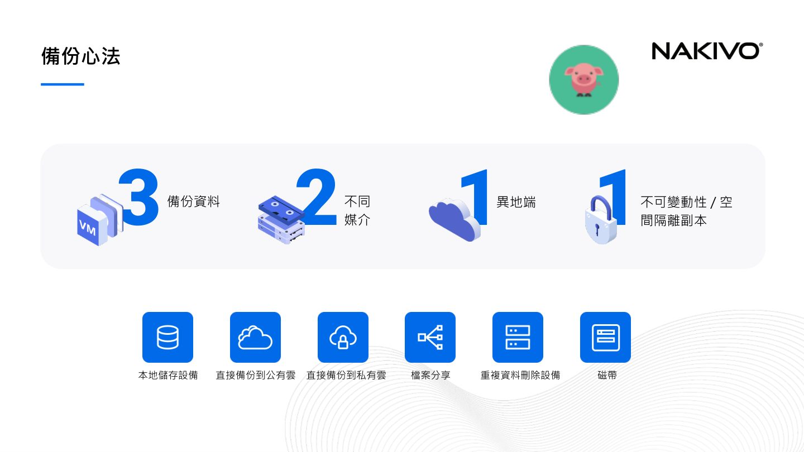
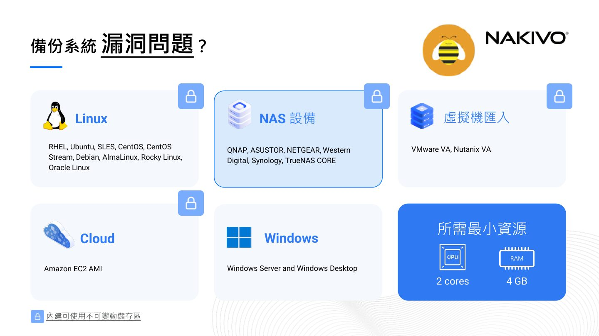
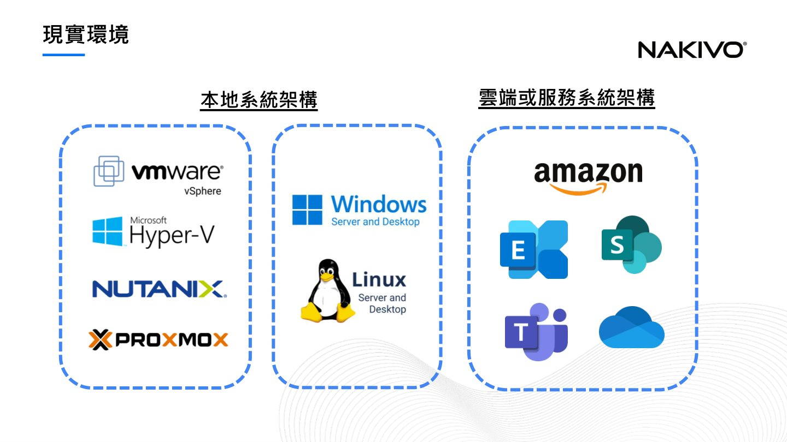
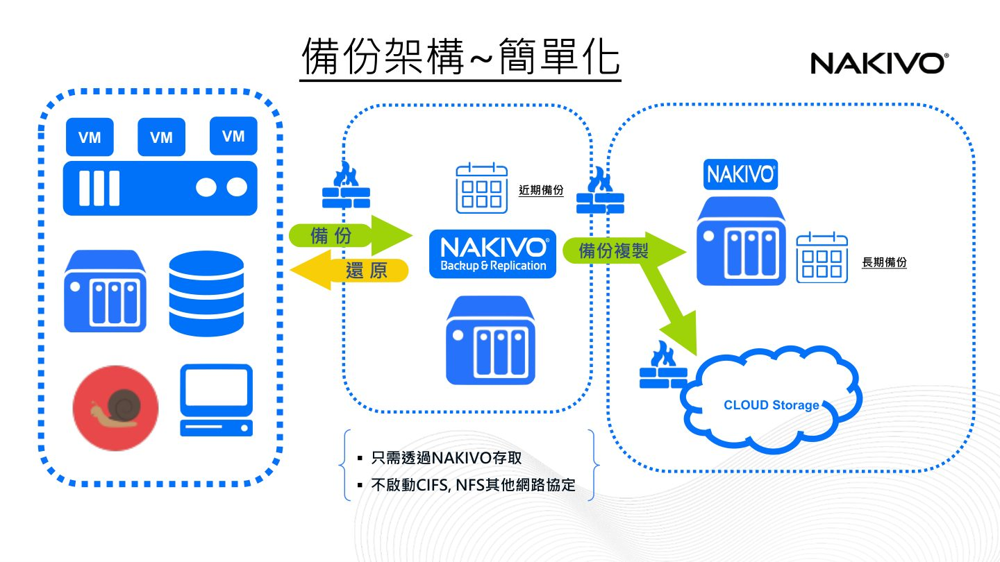

摘要
這場演講聚焦於混合雲環境下的資料備份與災難復原策略，講者以 NAKIVO 產品為例，說明面對勒索軟體、內部威脅與人為錯誤等風險，企業關注的問題已從「我們有備份嗎」轉變為「被攻擊時可以復原嗎」。內容涵蓋 3-2-1-1-0 備份口訣、不可變動性備份、加密與存取控制，以及如何透過自動化驗證與簡化架構確保備份資料真正可用。
重點整理
- 2026 年的核心問題已從「有沒有備份」轉變為「被攻擊時能否復原」
- 提出新版備份口訣 3-2-1-1-0：3 個副本、2 種媒介、1 份異地/雲端、1 份離線、0 備份錯誤
- 不可變動性備份（WORM）可透過 Amazon S3、Wasabi、Backblaze B2、Azure Blob 或支援物件鎖定的 S3 相容儲存實現
- 備份存取控制包含 AES 256-bit 加密、雙因數認證（2FA）與角色型存取控制（RBAC）
- 透過自動化備份驗證（開機驗證、截圖驗證）確保虛擬機真的可以成功啟動，而非只是「有備份檔」
重點圖片／架構圖




威脅升級與心態轉變
講者指出企業面對的威脅正不斷演變，涵蓋 AI 驅動攻擊、Ransomware-as-a-Service（RaaS）、混合環境複雜性與惡意策略。過去大家關心的是「我們有備份嗎？」，但 2026 年真正該問的是「被攻擊時可以復原嗎？」，這個轉變凸顯了單純擁有備份已經不夠，復原能力才是關鍵。
3-2-1-1-0 備份口訣
演講重新詮釋經典的 3-2-1 備份策略並逐步升級：3-2-1 代表 3 個副本、儲存在 2 種不同媒介、1 份放在異地或雲端；3-2-1-1 在此基礎上增加 1 份離線副本以防範線上威脅；3-2-1-1-0 則進一步要求備份資料 0 錯誤，確保復原時萬無一失。備份媒介涵蓋本地儲存設備、公有雲、私有雲、檔案分享、重複資料刪除設備與磁帶等多種選項。
備份資料的安全防護
針對勒索軟體、人為錯誤與內部威脅，講者強調不可變動性備份（Write-once-read-many, WORM）的重要性，可透過 Amazon S3、Wasabi Hot Cloud、Backblaze B2、Azure Blob Storage 等公有雲服務、支援物件鎖定的 S3 相容儲存設備，或本地端 Linux 架構儲存區實現。在存取控制層面，備份資料與系統設定檔皆採用 AES 256-bit 加密，並搭配雙因數認證與角色型存取控制，確保只有授權人員能存取備份。
確保備份資料真正可用
演講指出光有備份檔案並不代表復原時一定成功，因此需要自動化備份驗證機制，確保虛擬機可以成功啟動，並透過截圖驗證與開機驗證方式確認完整性，且過程不影響網路效能，管理者可透過網頁介面或郵件掌握所有驗證狀態。
簡化混合雲備份架構
面對本地系統架構與雲端或服務系統架構並存的複雜混合環境，講者展示如何簡化備份架構：虛擬機備份、還原與備份複製皆只需透過單一 NAKIVO 介面存取雲端儲存，區分近期備份與長期備份，且不需另外啟動 CIFS、NFS 等網路協定，降低攻擊面。最終方案強調 All-in-one，支援備份、複製、精細還原、勒索軟體防護與災難復原，並涵蓋虛擬、實體與雲端多種平台，降低 IT 管理負擔。